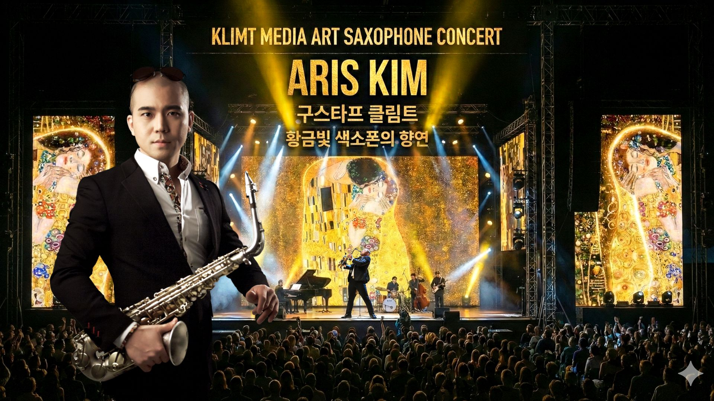
ARIS KIM
장르가 없는 게 아니라, 장르가 아리스김이다.
2003년 거리에서 시작해 2022년 카네기홀에 섰다. 색소폰 하나가 아니라 아리스김 전부로.
세계 최초 Art Intelligence 공연 창시자 — 연주하고, 춤추고, 그린다. 동시에.
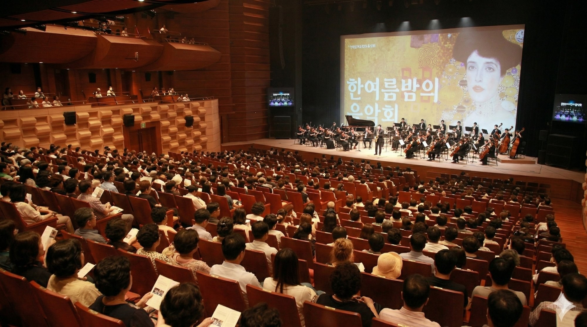
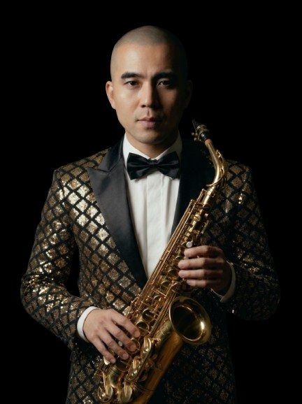
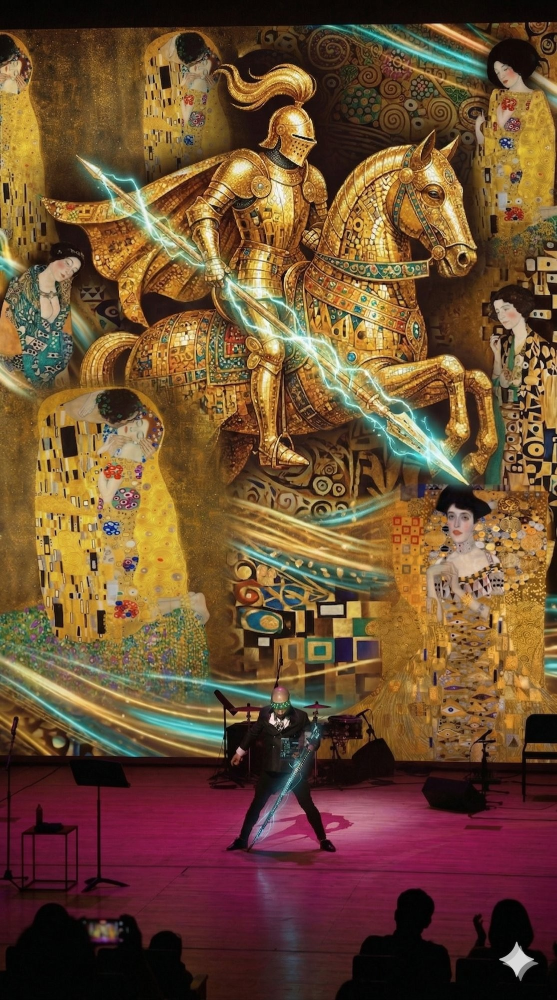
구스타프 클림트의 황금빛 세계가 무대 위에 살아 숨쉰다
초청 공연
최초 1호 아티스트
에세나리오 부문
공식 수상
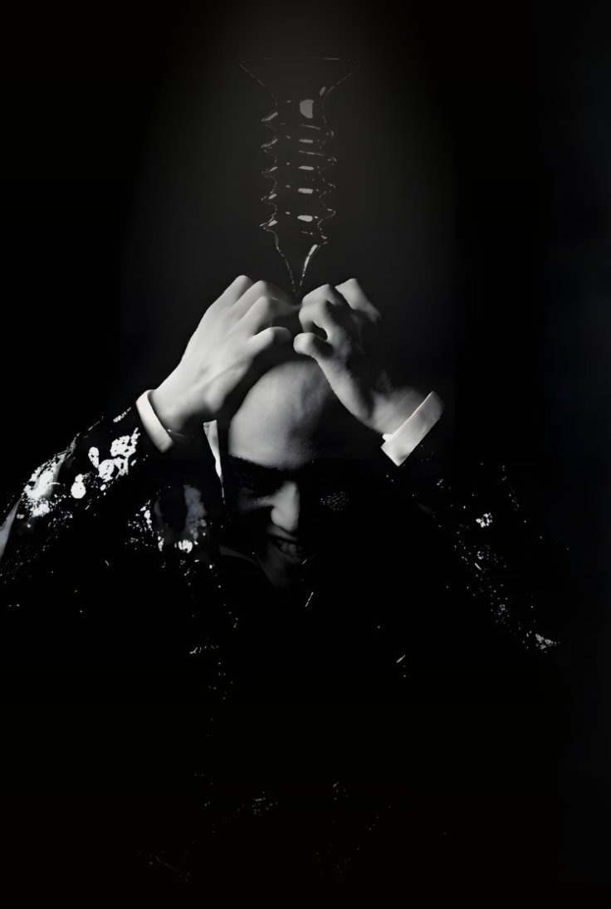
장르가 아리스김이다.
아리스 김,
그는 누구인가
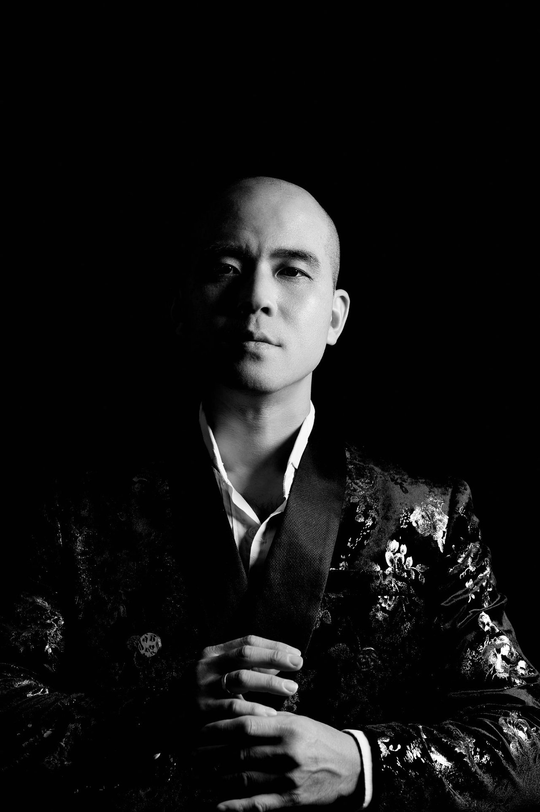
- 한국예술종합학교 음악원 색소폰 · 학생회장 2년
- 한국콘텐츠진흥원 문화체험기술창조 과정 수료
- 문화창조 아카데미 예술 콘텐츠 랩
- MBC 언리얼 엔진 전과정 수료
- 예술의전당 최초 1호 아티스트 선정
- 유인촌 문화체육부장관상 수상
- 뉴욕 카네기홀 초청공연
- 한국을 빛낸 위대한 100대상 수상
- 2016 Asia Tango 챔피언 수상
- SBS 스타킹 · 생방송 투데이
- KBS 뉴스라인 특별 게스트 출연
- MBC 놀라운 세상 · 라디오스타
- 7시간 다큐멘터리
- 클림트 빛의 콘서트 제작 및 주연
- ARISHOW 제작 · 기획 · 연출 · 출연
- 김덕수 사물놀이 예술단 협연
- 클림트·반고흐 미디어아트 전시 기획
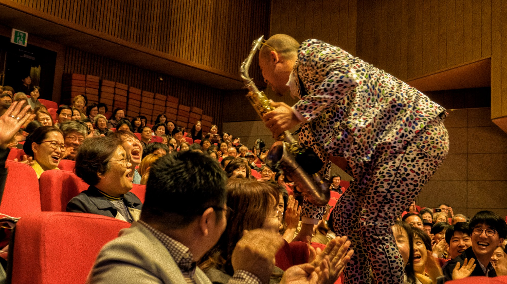
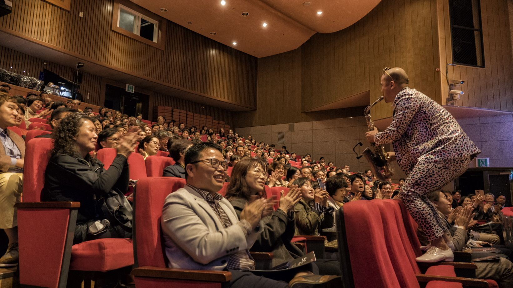
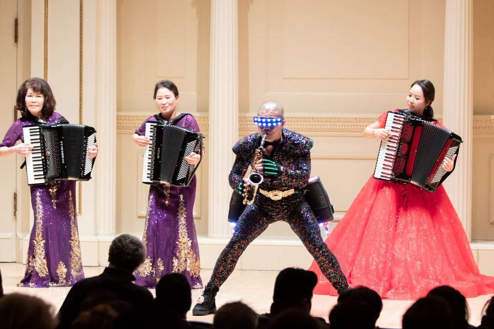
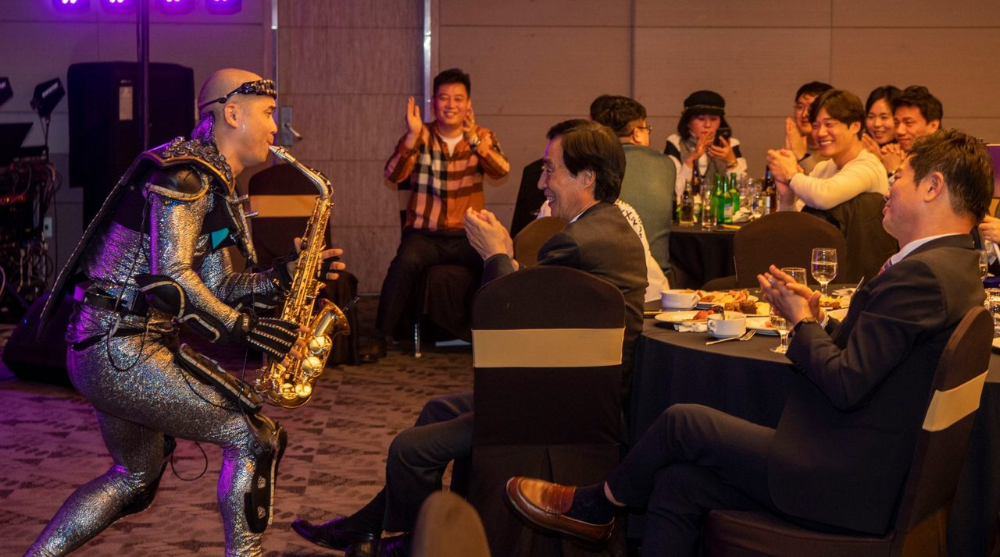
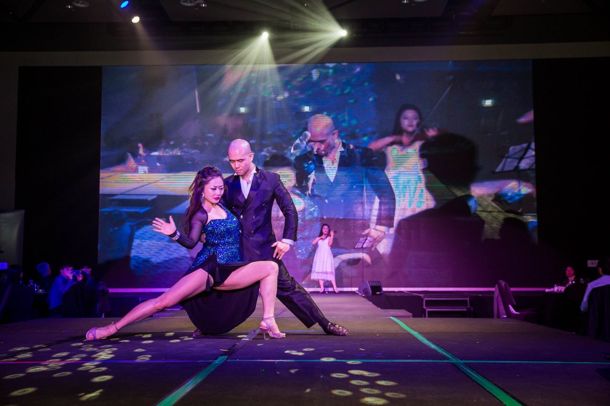

검증된
아티스트의 이력
-
2022
뉴욕 카네기홀 초청 무대
뉴욕 타임스퀘어 현대미술 퍼포먼스 -
2016
아시아 탱고 챔피언십 에세나리오 부문 대상
바탱고 솔로탱고 특허 창시 -
2014
한국을 빛낸 사람들
공연예술발전공로대상 -
2013
예술의 전당 설립 25주년 최초 1호 아티스트
자랑스런 한국인 대상 · 국위선양공로대상 - 2009 유인촌 문화부 장관상 수상

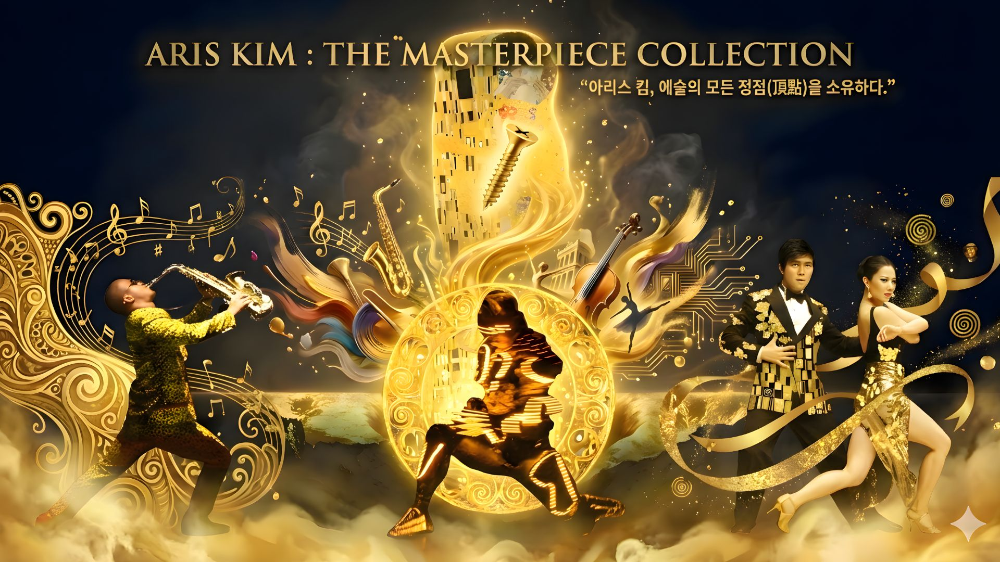
ARIS KIM :
THE MASTERPIECE
COLLECTION
예술의 전당에서 카네기홀까지.
아리스김이 만들어온 걸작들.
"제2의 백남준 월드스타"
서울신문 · 2016국내외 언론이
주목한 아티스트
예술의 전당 최초 1호 길거리 아티스트 '아리스 김'…美 뉴욕 카네기홀 무대에 서다
한국 프레시안 및 러시아 국영 매체 primamedia.ru 동시 보도. 거리 공연에서 카네기홀까지의 여정이 국제적 주목을 받다.
기사 보기 →"제2의 백남준 월드스타" — 아리스김
비디오 아트와 공연 예술의 경계를 허문 아리스김을 비디오 아트의 선구자 백남준의 계보를 잇는 아티스트로 조명.
기사 보기 →예술의전당도 인정한 '거리의 악사' 아리스 김
예술의 전당 설립 25년 만에 처음으로 허락한 최초의 거리 아티스트. "계단 앞 광장이 최고의 무대"라고 말한 아티스트의 이야기.
기사 보기 →관객과 함께 만들어가는 음악극 '아리쇼' — 세계 최초 AI 공연
한국콘텐츠진흥원 공식 제작 지원. 스마트폰 앱으로 관객이 직접 공연에 참가하는 Art Intelligence 콘서트 — 해외 수출형으로 기획.
기사 보기 →ARIS KIM ×
친친탱고
(CHINCHIN TANGO)
아시아 탱고 챔피언 아리스 김과 대한민국 최정상 아르헨티나 탱고 밴드 친친탱고의 만남. 반도네온 · 피아노 · 바이올린 · 퍼커션이 빚어내는 피아졸라의 세계 위로 색소폰이 날아오릅니다.
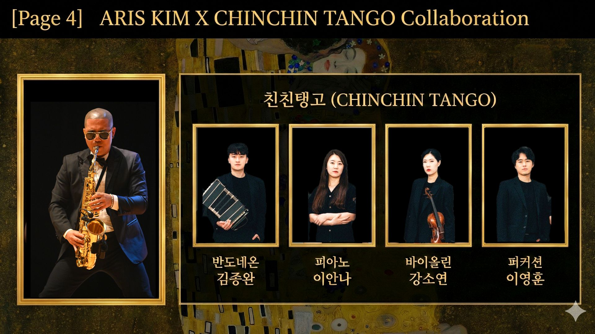
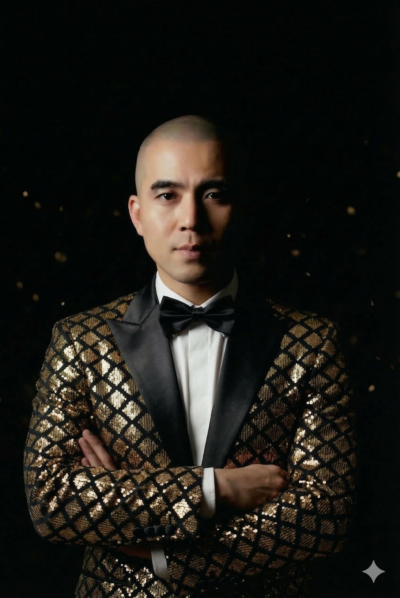
- 한국예술종합학교 음악원 색소폰 전공 · 학생회장 2년
- 예술의전당 설립 25주년 최초 1호 아티스트 선정
- 아시아 탱고 챔피언십 에세나리오 부문 대상 (2016)
- 뉴욕 카네기홀 초청 공연 · 뉴욕 타임스퀘어 현대미술 퍼포먼스 (2022)
- 세계 최초 AI 공연 창시 · KOCCA 제작지원 선정
- 현) 색소폰 연주자 · 미디어아트 퍼포머 · 탱고 마에스트로 · 카운터테너
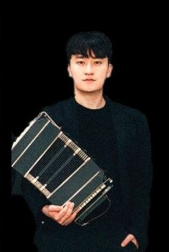
- 서울대학교 음악대학 작곡과 석사과정 재학
- 2020 한국음악상 젊은음악가상 수상
- 영화 〈내겐 너무 소중한 너〉 외 다수 작곡
- 현) 웨스턴심포니오케스트라 전속작곡가
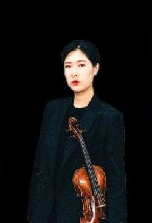
- 부산대학교 예술대학 음악학과 졸업
- 진주시립교향악단 협연
- 금정문화회관 신인음악회 초청 연주
- 현) 김해신포니에타 단원
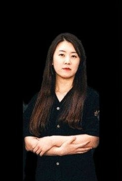
- 부산대학교 예술대학 음악학과 및 동대학원 졸업
- 부산대학교 예술영재교육원 강사 역임
- 현) 친친탱고 · 스플렌데라 · 원잇앙상블 피아니스트
- 음악당라온 전속 연주자
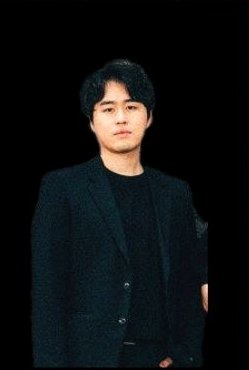
- 동의대학교 산업문화대학원 뉴미디어 음악과 졸업
- 해운대/부산 재즈페스티벌 라틴재즈밴드 'Getz' 수상
- 월드뮤직단체 'Afrovibe Studio' 대표
검증된 무대,
신뢰할 수 있는 아티스트
경계를 넘는 자의
언어
"회사를 키우느라 열정적으로 일만 해왔어요. 그런데 항상 허전했어요. 바로 피부의 허기였던 거죠. 오랫동안 잠들어 있던 변연계를 오늘 처음으로 깨울 수 있었어요."
— 공연 후, 전남대학교 최고경영자과정(AMP) 참가 기업인의 고백새로운 것을 하지 않으면 창의적일 수 없습니다. 저는 신피질이 먼저 작동하는 사람이 아닙니다. 감각이 먼저 알았고, 그게 저였습니다. 머리가 비어야 할 수 있는 것이 있어요. 계산하지 말고, 본능을 쫓아가며, 야생적으로 살자. 그게 제 철학이었습니다.
바로 여러분입니다. 그리고 솔직히 말씀드리면 — 가난이 저를 만들었습니다. 선택지가 없었습니다. 그 절박함이 저를 경계 밖으로 밀어냈고, 경계 밖에서 저는 비로소 살아있음을 느꼈습니다.
나 자신을 복제하자. 그렇게 시작한 것이 미디어 아트입니다. 저를 디지털로 복제하고, 그 '나'와 함께 공연했습니다. 내 욕심이 만들어 낸 외로움이 결국 새로운 예술의 형식을 낳은 겁니다.
AGI 시대가 오면 계산하는 능력은 인공지능이 대신합니다. 그때 우리에게 남는 것은 무엇입니까? 바로 변연계입니다. 감각하고, 느끼고, 연결하는 것. 저는 이미 그 방식으로 살아왔습니다.
"탱고 하지 마라고 했던 내가, 10년 뒤 그가 아시아 챔피언이 되는 것을 봤습니다. 몸의 언어로 경계를 넘는 사람. 그 사람의 시대가 오고 있습니다."
— 전수환 교수 · 전남대학교 AMP · 20년 관찰자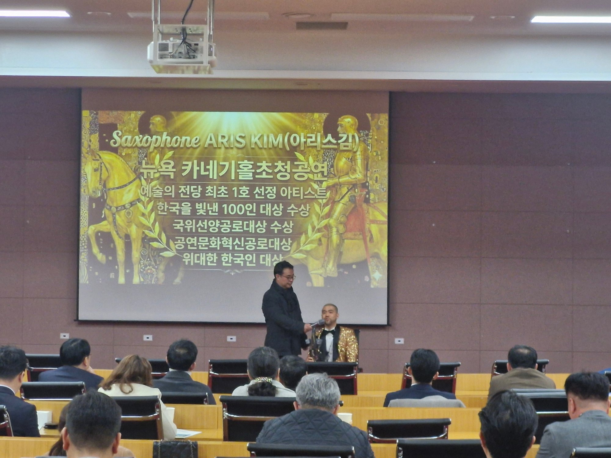
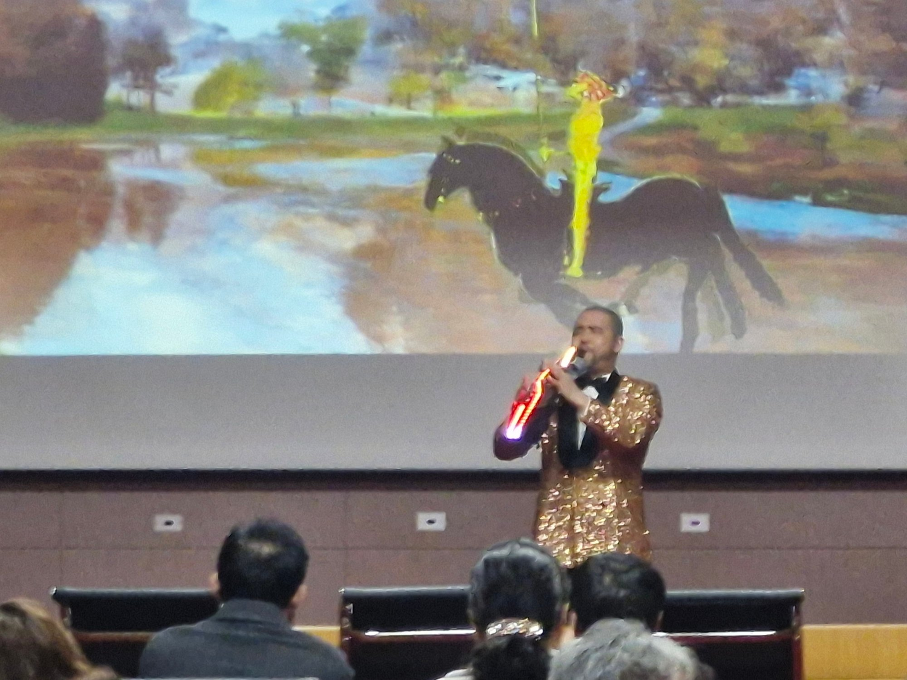
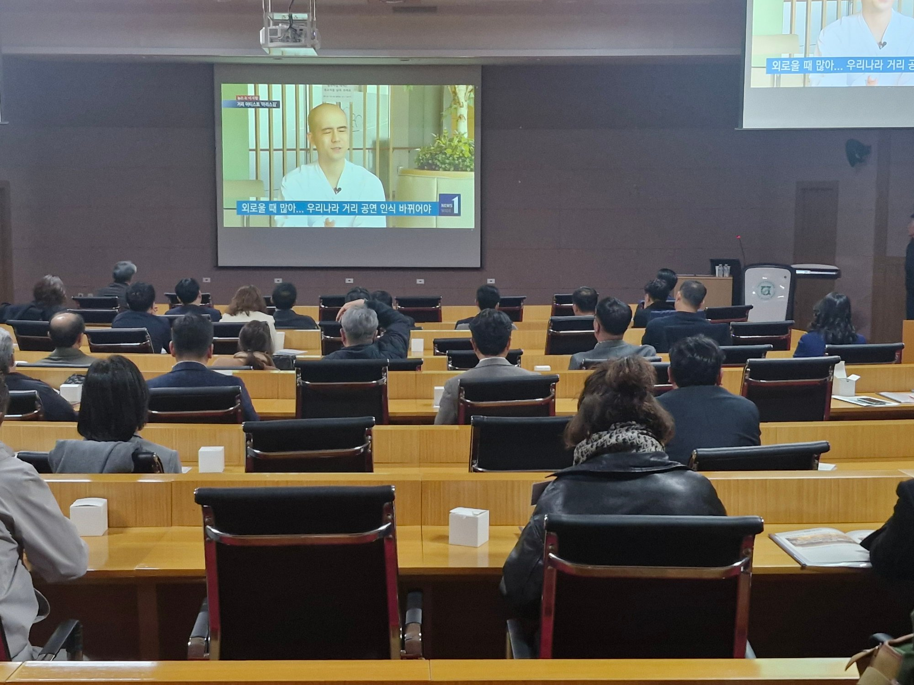
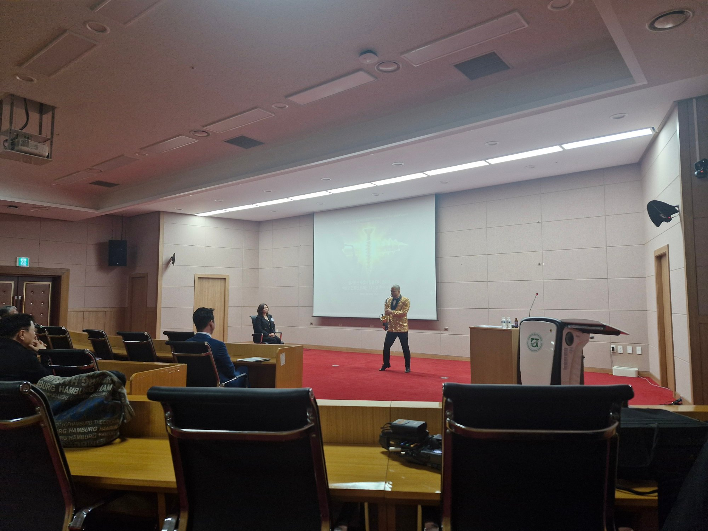
"나를 안아내는 처절한 몸부림이,— ARIS KIM
당신을 향한 가장 찬란한 빛이 되기까지."
아리쇼: 상처받은 치유자의 탄생
1999년 기계과 자퇴부터 한국예술종합학교까지. 나의 아픔을 뜨겁게 끌어안을 때 비로소 타인의 고통도 안아줄 수 있다는 역설적 진리.
더 큰 빛을 향한 갈망, 클림트를 만나다
개인의 고백을 넘어 인류 보편의 감동으로 나아갈 그릇을 찾던 순간, 구스타프 클림트의 황금빛 세계가 눈앞에 펼쳐졌습니다.
"색소폰의 선율이 클림트의 황금빛 입자와 충돌하는 그 90분 —
전 세계인의 마음과 마음이 만나는 가장 찬란한 안김의 기적."
융합 예술의 정점,
아리쇼의 세 가지 언어
클래식의 우아함에 스트리트의 야성을 입힌다. 구스타프 클림트의 명작 속으로 걸어 들어가는 몰입형 미디어 아트. 대한민국 대표 탱고 밴드의 심장을 울리는 라이브 연주. 그리고 이 모든 것을 지휘하는 아리스 김의 폭발적인 색소폰 퍼포먼스.
스트리트에서 카네기홀까지, 파격을 넘어선 증명. 예술의전당 설립 25년 만의 최초 '거리 아티스트' 선정. 이 하나의 타이틀만으로도 기존 예술계의 틀을 깨부순 그의 파괴적인 영향력은 증명됩니다. 이 무대는 실패할 수 없는, 가장 확실한 투자입니다.
뻔한 문법을 거부하는 독창적 세계관, 아리쇼. 아바타·특수 분장·레이저 아트가 결합된 넌버벌 퍼포먼스는 언어의 장벽을 넘어 전 세계인을 사로잡습니다. 현대 미술과 최첨단 기술이 결합한 '움직이는 미술관'입니다.
ART
INTELLIGENCE
2018년 한국콘텐츠진흥원 제작지원.
스마트폰으로 관객이 직접 참가하는
세계 최초 실시간 AI 공연 창시.
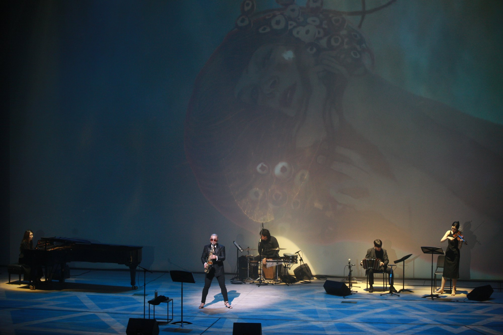
"색소폰의 선율이 클림트의 황금빛 입자와 충돌하는 그 90분 —
전 세계인의 마음과 마음이 만나는 가장 찬란한 안김의 기적."
세 가지 기술이
하나의 황금 무대로
- 클림트 명작의 몰입형 프로젝션 맵핑
- 무대 전체를 캔버스로 활용한 압도적 영상미
- 음악의 흐름에 따라 변화하는 살아있는 명화
- 음악의 비트와 선율에 반응하는 레이저 효과
- 공간을 조각하는 입체적인 빛의 향연
- 관객과 호흡하는 역동적인 라이팅 퍼포먼스
- 색소폰 라이브와 탱고 댄스의 결합
- 특수 효과와 미디어 아트 활용 넌버벌 퍼포먼스
- 아리스 김의 독창적인 세계관 구현
한국 최초
비디오 아트 콘서트 창시
백남준 선생님은 브라운관 속에 세상을 넣었습니다. 저는 그 세상 속으로 직접 걸어 들어가고 싶었습니다.
— ARIS KIM2012년, 국내 최초로 비디오 아트와 라이브 색소폰 연주를 하나의 무대 위에 결합했습니다. 영상은 배경이 아니었습니다. 아티스트가 그 안으로 직접 투입되어 디지털 아바타와 같은 공간에서 호흡했습니다.
서울신문은 아리스김을 "제2의 백남준 월드스타"라고 불렀습니다. 2018년에는 한국콘텐츠진흥원(KOCCA) 제작 지원을 받아 세계 최초 실시간 관객반응형 AI 공연을 창시했습니다.
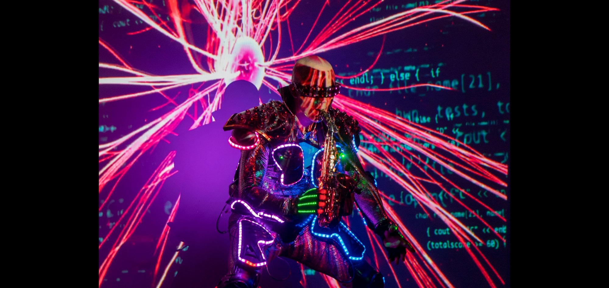


아리스김의
무대를 만나보세요


어떤 무대든
아리스김이 됩니다
행사 목적에 맞게
맞춤 구성합니다

색소폰을 내려놓는 순간,
탱고가 시작됩니다
아시아 탱고 챔피언, 뉴욕 카네기홀 탱고 퍼포먼스,
그리고 세계 유일의 바탱고(솔로탱고) 특허 창시자.
에세나리오 부문 · 2016
탱고 & 색소폰 퍼포먼스
세계 최초 특허 창시
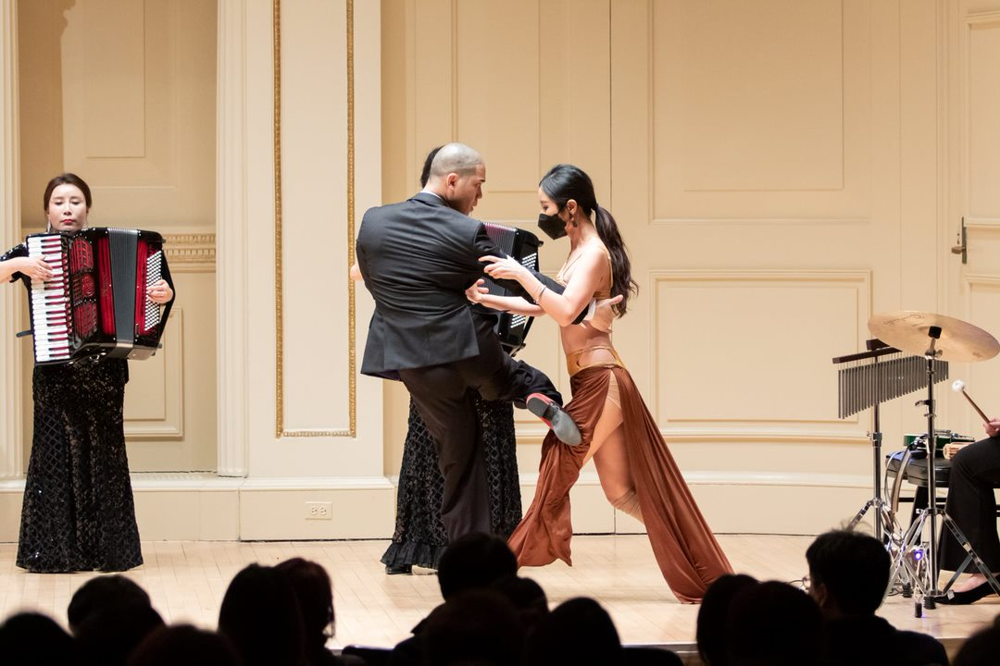
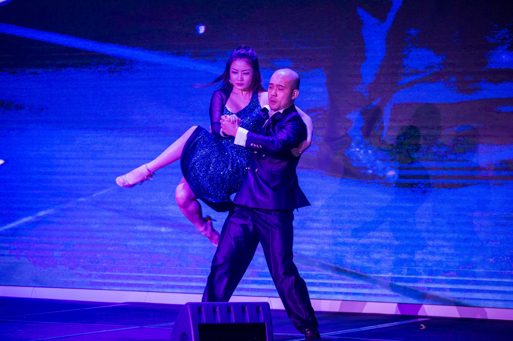
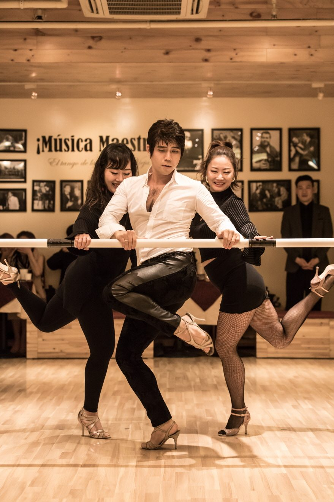
Tango Championship Champion
에세나리오(무대 탱고) 부문 아시아 챔피언. 아르헨티나 부에노스아이레스행 티켓이 증명하는 실력. 한국 탱고 커뮤니티에서 가장 유명한 강사이자 퍼포머.
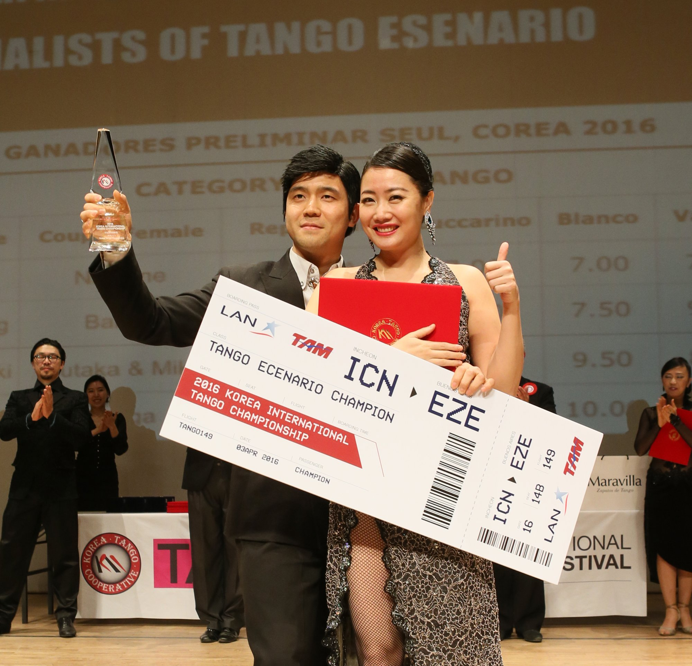
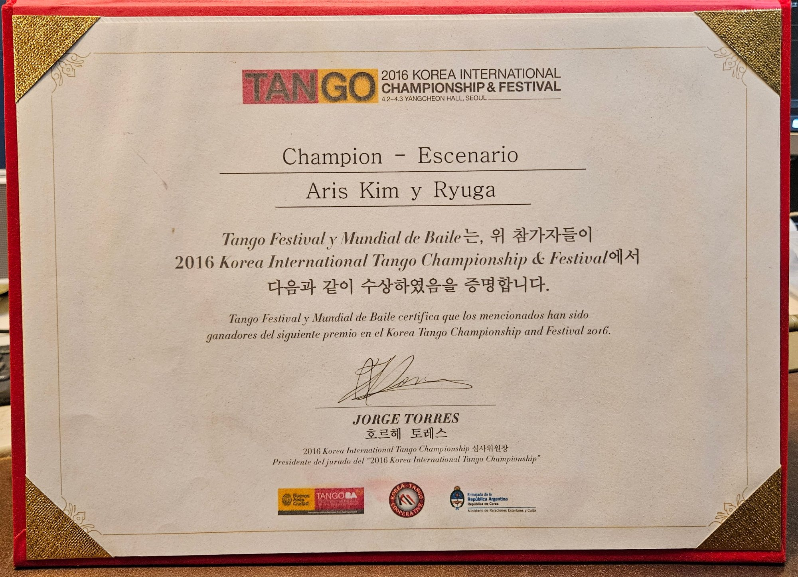
총 90분
3부 구성
오프닝
- —Palladio — Karl Jenkins
클림트의 황금빛 세계
- —Adagio — Albinoni
- —Fantasy Para Quinteto
탱고와 색소폰의 대화
- —Por una Cabeza
- —Adios Nonino
빛의 콘서트 · 미디어 아트
- —Hey Jude — The Beatles
- —Combat Zone
피날레: 황금 나사의 울림
- —Nocturna — J. Colangelo
완성도 높은 공연을 위한
기술 사양
무대 규격
- 최소 무대: 가로 8m × 세로 6m 이상
- 천장 높이: 4m 이상 권장
- 분장실 및 대기 공간 필수
- 무대 설치 사전 협의 필요
음향 시스템
- PA 메인 스피커 시스템
- 모니터 스피커 최소 2개
- 무선 마이크 시스템
- 믹싱 콘솔 (32채널 이상)
조명 & 미디어
- 기본 무대 조명 시스템
- 미디어아트 공연 시 완전 암전 필수
- 대형 LED 스크린 또는 프로젝터
- 최소 스크린 규격: 5m × 3m 이상
전력 & 기타
- 미디어 장비용 220V 30A 이상
- 리허설 시간: 공연 당일 최소 3시간
- 사운드체크: 공연 2시간 전
- 세부 사항 사전 협의 가능
※ 위 사항은 기본 가이드라인이며, 공연 형식 및 규모에 따라 달라질 수 있습니다.
정확한 기술 라이더 전문 문서는 계약 체결 후 제공해 드립니다.
기획자가
가장 많이 묻는 질문
공연 의뢰부터
완성까지
ARIS KIM을
무대로 초대하세요
기업 · 대학 · 문화재단 · 지자체 · 정부 기관
공연 날짜 · 장소 · 규모를 알려주시면
맞춤 제안서를 보내드립니다.